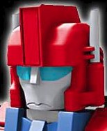

About br0ch0n
Aloha! I'm br0ch0n. I spend a great deal of time being a Software Engineer, but my real passion is learning new things and sharing them with others. I really enjoy cooking and eating, as well as home improvement projects (though I may just like excuses to hoard power tools). I find that the satisfaction of making things yourself balances out the pain one must go through of learning by trial and error.
I also enjoy playing rugby. While I'm mostly retired from the sport, I still play "touch" rugby weekly and real rugby at least twice a year.